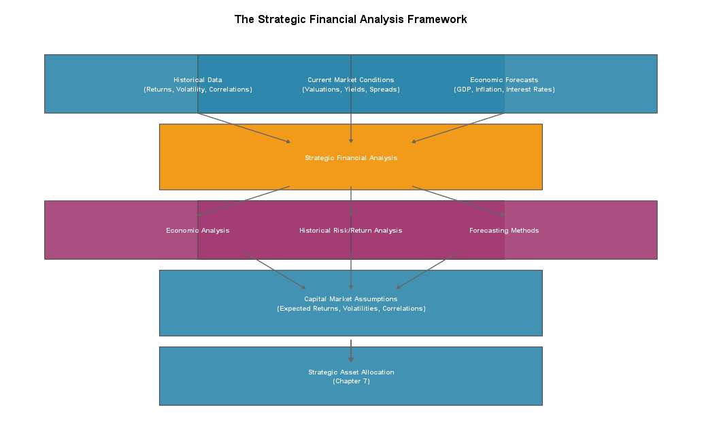
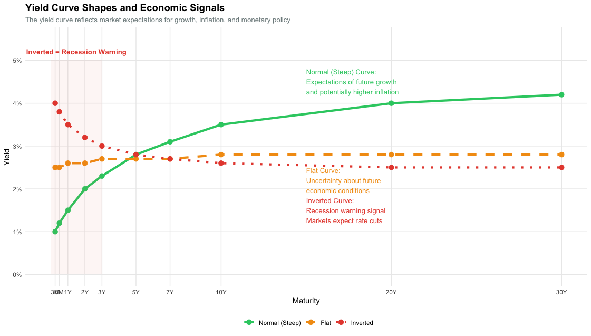
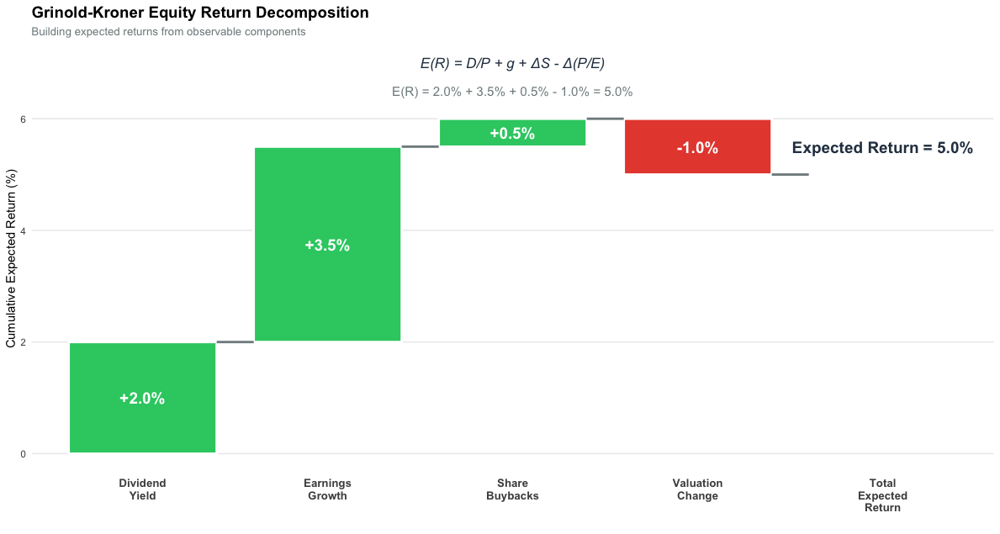
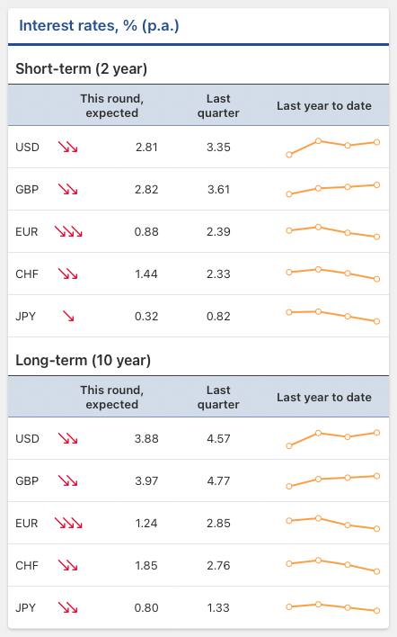
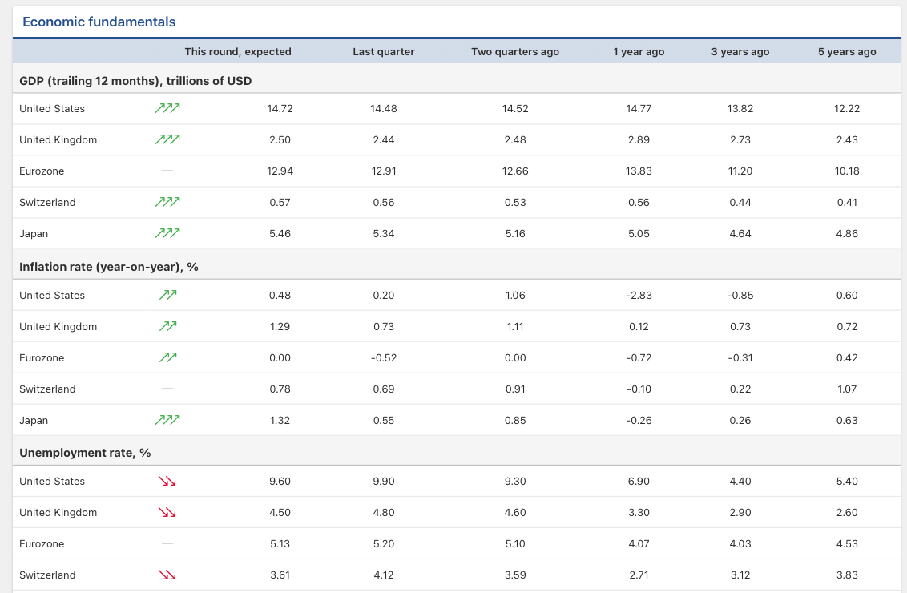

6 Strategic Financial Analysis
Associated slides: Lesson 4 — Strategic Asset Allocation
6.1 Introduction
In the preceding chapters, we developed a detailed understanding of the client and his financial situation. That work covered life stages, sources of wealth, behavioral biases, and unique circumstances. We also identified goals, quantified liquidity needs, assessed risk tolerance, and calculated return requirements. Chapter 5 then translated these findings into an Investment Policy Statement, which establishes the governance framework for all future investment decisions.
The IPS describes what the clients want to achieve with their portfolio: the return objective, risk tolerance, and key constraints. It also sets out how the portfolio will be governed through goal segmentation, diversification principles, and a clear rebalancing policy. Tax considerations, time horizons, liquidity needs, and behavioral guardrails during market downturns are recorded there as well. What the IPS does not do, however, is identify the asset classes most likely to deliver the required return over the next decade. Nor does it determine the optimal core mix of equities, bonds, and alternatives or estimate the return a conservative portfolio can realistically provide and the losses it might suffer in a bear market.
Strategic financial analysis addresses these questions by evaluating the long-term financial environment and current market conditions. Historical trends provide context, while present economic conditions help identify the environment in which the portfolio will operate. From this foundation, we develop forward-looking expectations for the risk and return characteristics of different asset classes. Known as capital market assumptions, these expectations become inputs for allocating the client’s portfolio across equities, bonds, and other investment categories.
This chapter examines economic variables such as GDP growth, inflation, and interest rates, together with their long-run relationships to asset-class returns. It considers what historical risk and return data can reveal about market behavior, as well as where that evidence becomes unreliable. Quantitative forecasting techniques, including regression analysis and Monte Carlo simulation, are set alongside qualitative tools such as scenario planning and expert judgment. The tactical use of these variables through the business cycle, monetary policy rules, and regime-based positioning belongs in the separate chapter on Tactical Financial Analysis. Throughout this chapter, the concepts are applied to our case study and used to build the analytical foundation for the strategic asset allocation decisions in Chapter 7.
6.2 The Role of Strategic Financial Analysis
Before turning to economic analysis, forecasting methods, and capital market assumptions, it is useful to establish what strategic financial analysis is, why it matters, and where it belongs in the broader investment management process.
6.2.1 Defining Strategic Financial Analysis
Strategic financial analysis systematically evaluates the long-term financial environment and market conditions to inform investment decisions. Tactical analysis, by contrast, focuses on short-term market movements and opportunistic portfolio adjustments. The strategic perspective usually spans five to ten years or more. Its purpose is not to call market turning points, but to form expectations for the risk and return characteristics of different asset classes across the investment horizon.
At its core, strategic financial analysis addresses a set of questions that every investment advisor must answer. What long-term returns can we expect from equities, bonds, and other asset classes? How much risk is associated with each asset class? How do different asset classes interact with one another? Do they move together, or do they provide diversification benefits? How do economic variables such as inflation, interest rates, and GDP growth influence these risk and return characteristics? What scenarios might unfold over the coming decade, and how would the portfolio perform under each?
These questions cannot be answered with certainty. Markets do not offer guarantees. But systematic analysis provides a disciplined framework for developing reasonable expectations. Those expectations, in turn, guide the allocation of client capital.
6.2.2 The Relationship to the Investment Policy Statement
The Investment Policy Statement drafted in Chapter 5 establishes the client’s objectives, constraints, and risk tolerance. It tells the advisor what the portfolio must achieve and within which boundaries. Strategic financial analysis supplies the market context needed to judge how realistically those objectives can be pursued.
The two documents therefore form a dynamic relationship. The IPS sets the target, while strategic analysis tests whether that target is achievable under current market conditions and in light of long-term historical patterns. Should the capital market assumptions imply that a portfolio consistent with the client’s risk tolerance cannot deliver the required return, the advisor must return to the client and shift the conversation from portfolio construction to goal adjustment. Spending expectations might have to fall, the time horizon may need to lengthen, or the required return may need to be reconsidered. When the assumptions support the target, implementation proceeds with greater confidence: the client understands both what the portfolio seeks to achieve and the market environment in which it will operate.
6.2.3 The Connection to Strategic Asset Allocation
Strategic financial analysis provides the inputs for strategic asset allocation. Chapter 7 examines how to determine the optimal mix of asset classes for a given client, an exercise that requires three estimates for each asset class: expected return, expected volatility, and expected correlation with the others. Together, these estimates form the capital market assumptions produced by this analysis.
Absent well-reasoned capital market assumptions, asset allocation can become arbitrary. An advisor might simply default to a standard balanced portfolio without asking whether it suits current market conditions. A disciplined set of assumptions instead supports a portfolio that reflects both the client’s circumstances and a sober assessment of the investment landscape.
Nor is strategic financial analysis a one-time exercise. It remains an ongoing discipline: capital market assumptions must be reviewed regularly and updated as conditions change. Failing to revise them leaves portfolios anchored to outdated expectations, effectively creating an institutional form of anchoring bias.
The process follows a logical sequence. Historical data, current market conditions, and economic forecasts feed three analytical components: economic analysis, historical risk and return analysis, and forecasting methods. Their combined output is the set of capital market assumptions used in strategic asset allocation. Once the long-term asset mix has been determined, it is documented in the Investment Strategy Summary that accompanies the IPS, completing the bridge from client analysis to portfolio implementation.

6.3 Analyzing Economic Variables
Capital market assumptions begin with economic analysis. Because markets are forward-looking, today’s prices reflect what investors expect tomorrow, and those expectations are shaped by the surrounding economy. Anyone constructing these assumptions therefore needs to understand both what drives economic activity and how changing conditions eventually appear in asset prices.
The strategic use of economic data has a specific purpose. Rather than asking what the economy will do next quarter, we ask what current inflation, growth, and interest rates reveal about the long-run environment in which the portfolio will operate. Current inflation serves as a proxy for long-run inflation, current growth as a proxy for long-run growth, and current yields as the mathematical anchor for bond returns over the bond’s duration. In other words, the data establishes an anchor. It is not treated as a short-term forecast.
The tactical chapter uses the same data differently. Its question is whether current conditions deviate from long-run norms enough to justify a temporary tilt away from the policy portfolio. Strategic analysis sets the anchor. Tactical analysis responds to the weather.
6.3.1 The Key Economic Variables
Investment professionals track economic indicators to assess economic health and market direction. Although the most useful indicators vary by context, a core set remains broadly relevant and forms the basis for capital market assumptions.
Gross Domestic Product
Gross domestic product measures the total value of goods and services produced within an economy over a specified period. It is the most comprehensive indicator of economic activity. GDP can be stated in nominal terms, reflecting current prices, or in real terms, adjusted for inflation to isolate changes in actual output. The growth rate of real GDP is calculated as the percentage change from one period to the next.
\[ \text{GDP Growth} = \frac{\text{Real GDP}_t - \text{Real GDP}_{t-1}}{\text{Real GDP}_{t-1}} \times 100 \]
For investors, GDP growth matters because it directly influences corporate earnings. When the economy expands, companies sell more goods and services. Revenues rise. Profits follow. Equity markets tend to appreciate in response. When the economy contracts, earnings decline, and equities typically suffer.
The relationship between GDP growth and asset returns is not uniform across all asset classes. Equities are most sensitive to growth expectations because corporate profits are a direct function of economic activity. Bonds are affected through a different channel. When GDP grows strongly, central banks tend to raise interest rates to prevent overheating, and higher rates reduce bond prices. Over long horizons, real assets such as real estate and commodities have historically participated in nominal growth, though their returns are driven by additional factors including supply conditions and inflation.
GDP data is most useful here as an anchor for long-run earnings growth. Because nominal GDP combines real growth and inflation, it sets a ceiling on nominal earnings growth for the corporate sector as a whole. Individual companies may outgrow GDP for a time, but the aggregate cannot outrun the economy indefinitely. Accordingly, nominal GDP growth provides the natural starting point for the long-run earnings assumption in the Grinold-Kroner framework developed later in this chapter.
Inflation
Inflation measures the rate at which the level of prices for goods and services rises over time. The most important measure is the Consumer Price Index, which tracks the cost of a representative basket of goods and services purchased by households. The inflation rate is calculated as the percentage change in the index.
\[ \pi = \frac{\text{CPI}_t - \text{CPI}_{t-1}}{\text{CPI}_{t-1}} \times 100 \]
For investors, inflation erodes the purchasing power of investment returns. A portfolio that earns 5 percent in a year when inflation is 2 percent delivers a real return of only 3 percent. In periods of high inflation, maintaining purchasing power becomes a primary investment objective.
Different asset classes respond differently to inflation over the long run. Equities have historically provided some protection against moderate inflation, as companies can raise prices to pass through cost increases. In periods of very high or volatile inflation, however, equity returns suffer as uncertainty rises and discount rates increase. Bonds are particularly vulnerable because their fixed payments lose value when prices rise. Real assets such as commodities, real estate, and inflation-linked bonds provide more direct protection.
Two roles make inflation central to the strategic analysis. It converts nominal returns into real returns, which determine the client’s purchasing power, and it feeds into the nominal earnings-growth assumption for equities and nominal-yield assumption for bonds. The current rate can serve as a long-run proxy, with an adjustment toward the central bank’s target when it is unusually high or low.
The Fisher Equation
The relationship between nominal returns, real returns, and inflation is formalized in the Fisher equation. First proposed by Irving Fisher, this equation serves as the foundation for all valuation models by separating the ‘price of time’ from the ‘erosion of value’ caused by inflation. In its exact form:
\[ 1 + r_{\text{nom}} = (1 + r_{\text{real}})(1 + \pi^e) \]
Where \(r_{\text{nom}}\) is the nominal rate, \(r_{\text{real}}\) is the real rate, and \(\pi^e\) is expected inflation. The approximate form, widely used in practice, is:
\[ r_{\text{nom}} \approx r_{\text{real}} + \pi^e \]
This relationship underpins the pricing of all financial assets. When inflation expectations rise, nominal yields must rise to deliver the same real return. When inflation expectations fall, nominal yields can fall. For bond investors, the Fisher equation explains why unexpected inflation erodes real returns. If actual inflation exceeds expected inflation, the realized real return falls below the ex-ante real rate.
The Fisher equation is the tool that converts nominal capital market assumptions into real ones. If the strategic analysis produces a 4.2 percent nominal expected return on USD government bonds and the inflation assumption for USD is 1.7 percent, the real expected return is approximately 2.5 percent. This real return is what the client should compare to the return target in the IPS, because the IPS is expressed in terms of the client’s spending needs, which are real.
Interest Rates
Interest rates, set by central banks and shaped by market forces, represent the price of money. They influence the cost of borrowing for companies and households, the discount rate used to value future cash flows, and the relative attractiveness of different asset classes. Central banks set short-term policy rates to guide economic activity. Market forces determine longer-term yields based on expectations for future policy rates, inflation, and term premiums.
For bonds, the relationship between interest rates and prices is direct. When interest rates rise, the present value of future fixed payments falls, and bond prices decline. When rates fall, bond prices rise. The sensitivity of a bond’s price to changes in interest rates is measured by its duration.
For equities, the relationship is more complex. Higher interest rates increase the cost of capital for companies, reducing profitability and investment capacity. They also raise the discount rate applied to future earnings, reducing the present value of those earnings and thus stock prices. Lower rates have the opposite effect, supporting both corporate activity and equity valuations. The transmission is not instantaneous. Markets anticipate rate changes, and the effect of a policy shift may be priced in well before it occurs.
For fixed income, the current yield to maturity on a government bond is the most important input. It is directly observable and represents the mathematical return an investor earns if the bond is held to maturity and the issuer does not default. No forecast is required: the current yield is the expected return, adjusted only for reinvestment assumptions and default risk. That is why strategic analysis treats current yields as anchors rather than signals.
Employment and Consumer Confidence
Employment data provide insight into the health of the labor market, which drives consumer spending. The unemployment rate measures the percentage of the labor force that is actively seeking work but unable to find it. Other indicators include labor force participation, job creation figures, and wage growth. When employment is strong and unemployment is low, consumers have income and confidence to spend. This supports corporate earnings and economic growth. When employment weakens, spending typically follows, and the economy slows.
Consumer confidence indices measure how optimistic households feel about their financial situation and the broader economy. High confidence tends to correlate with increased spending on durable goods, housing, and discretionary items. Low confidence can signal a pullback that slows growth further. For investors, these indicators provide early signals about the direction of the economy. They are leading indicators, often turning before the broader economy does.
Employment and confidence data help position the long-run growth assumption within a reasonable range. A region marked by persistently weak employment and low confidence is likely to grow more slowly than one with strong employment and rising confidence. Current readings therefore provide direction, but they should not be used to map the economy’s quarter-to-quarter path.
Exchange Rates
For internationally diversified portfolios, exchange rates matter. When an investor holds assets denominated in foreign currencies, changes in exchange rates affect the value of those assets when converted back to the investor’s home currency. A strengthening home currency reduces the value of foreign holdings. A weakening home currency increases it. Currency movements can amplify or offset the local-currency returns of international investments.
The decision to hedge currency exposure depends on the investor’s objectives, time horizon, and tolerance for short-term volatility. For long-term investors, currency fluctuations tend to even out over time, and the cost of hedging may outweigh the benefits. For those with shorter horizons or specific liability streams in their home currency, hedging can reduce unwanted volatility.
Exchange rates matter for two strategic reasons. They determine how foreign returns translate into the investor’s home currency and provide information about relative inflation and interest-rate differentials across markets. Over a long horizon, the usual base case is convergence toward purchasing power parity, implying that currencies with higher inflation depreciate against those with lower inflation. This is a modeling assumption rather than a forecast, so its sensitivity should be tested.
The Yield Curve
The yield curve plots the yields of bonds of different maturities at a given point in time. Under normal conditions, the curve slopes upward. Longer-term bonds offer higher yields than shorter-term bonds, compensating investors for the risk of holding fixed payments over extended periods.
The shape of the yield curve reflects market expectations about future interest rates, inflation, and term premiums. Because these expectations are embedded in the prices of bonds with capital at risk, the curve provides a continuous read on how the market views the path ahead. The slope of the curve (the difference between long-term and short-term yields) varies over time, and periods in which short-term yields exceed long-term yields have historically coincided with episodes of economic weakness. Campbell Harvey (1986) documented the relationship between the slope of the curve and subsequent business cycle conditions, establishing the yield curve as one of the most closely watched indicators in macro-financial analysis.
The yield curve supplies one basis for the term-premium assumption in long-horizon bond forecasts. The difference between the ten-year yield and the short-term policy rate measures the premium the market is demanding. A wide spread supports a positive contribution to long-bond returns. A narrow or negative one argues for a smaller contribution or none at all.
The yield curve is not infallible, and the timing of any relationship between its shape and future economic conditions is variable. It is best understood as one input among many in the assessment of the economic environment.

The economic variables examined in this section provide the raw inputs for the historical analysis and forecasting methods that follow. Historical risk and return analysis examines how asset classes have behaved across past cycles. Forecasting methods translate current conditions and long-run relationships into forward-looking capital market assumptions. The tactical application of these same variables, through the business cycle, monetary policy rules and regime-based positioning, is developed separately in the chapter on Tactical Financial Analysis.
6.4 Historical Risk and Return Analysis
Capital market assumptions look forward, but they are built on a foundation of past data. Historical risk and return analysis examines how asset classes have performed over previous market cycles, how they have behaved during crises, and what long-term relationships exist between them. In this way, history provides context and discipline for the forward-looking assumptions we develop.
6.4.1 What Historical Analysis Can Tell Us
Historical analysis provides several insights that inform capital market assumptions. It reveals the range of possible outcomes. For global equities, the data shows average returns of 8 to 10 percent, while individual years have ranged from gains exceeding 50 percent to losses exceeding 40 percent. Understanding this range helps investors prepare for the volatility they will experience. A 20 percent loss in a single year does not mean that the strategy has failed. Such losses are a normal part of equity investing and have occurred many times in the past.
History also shows how asset classes behave during periods of market stress. Global equities lost nearly 40 percent in the 2008 financial crisis, while government bonds gained as investors sought safety. During the 2020 pandemic, equities fell sharply but recovered quickly, and bonds again provided a buffer. Although these patterns are not guaranteed to repeat, they offer a baseline for understanding how portfolios might perform in future crises.
Long-term relationships between asset classes emerge from the historical record as well. Correlations can change, but the available data still provides a baseline for understanding how assets tend to relate to one another. Swiss equities and global equities, for example, have had a historical correlation of approximately 0.7. They tend to move together while still offering some diversification benefit. By contrast, the historical correlation between equities and government bonds has been near zero, a relationship that has supported balanced portfolio construction for decades.
6.4.2 The Limitations of Historical Analysis
For all its value, historical analysis has significant limitations. Most importantly, past returns do not guarantee future returns. A decade of strong equity returns does not ensure that the next decade will be similar, and elevated valuations after a strong period often suggest that future returns will be lower. Relying solely on historical averages would have led investors to overestimate returns after the 1990s bull market and underestimate them after the 2008 crisis.
Structural changes can alter relationships between asset classes because financial markets are not static. The decline of inflation since the 1980s has changed the relationship between bonds and inflation. At the same time, the integration of global markets has increased correlations between international equities, while the rise of passive investing has changed market dynamics. A history spanning multiple regimes may therefore be an unreliable guide to a regime that has changed.
Correlations between asset classes are not stable over time, a property known as non-stationarity. Equities and bonds may be uncorrelated in normal conditions, yet their correlations often increase during a crisis as investors sell broadly to raise cash. In a deflationary environment, bonds may rise as equities fall. During inflationary periods, both may decline together. Historical correlations provide a baseline, but they must be adjusted for current conditions.
Historical data is also affected by survivorship bias. Failed companies, defaulted bonds, and collapsed markets are often excluded from long-term return series, which can overstate historical returns relative to what investors actually experienced. The record reflects the winners that survived rather than the full universe of investments that once existed.
6.4.3 Beyond the Normal Distribution
Standard deviation is the most common measure of risk in finance because it captures the dispersion of returns around the mean. Under the assumption of a normal distribution, it provides a complete description of risk. Financial market returns, however, are not normally distributed. They exhibit skewness and kurtosis, two properties that standard deviation alone does not capture. Understanding them is essential for realistic risk assessment.
Skewness measures the asymmetry of a return distribution. A positively skewed distribution has a long right tail and therefore a higher probability of large positive returns than a normal distribution would suggest. A negatively skewed distribution has a long left tail, pointing to a higher probability of large negative returns. Equity market returns tend to be negatively skewed, so large losses occur more frequently than a normal distribution would predict.
The formula for skewness is:
\[ \text{Skewness} = \frac{n}{(n-1)(n-2)} \sum_{t=1}^{n} \left( \frac{r_t - \bar{r}}{\sigma} \right)^3 \]
Where \(r_t\) is the return in period t, \(\bar{r}\) is the average return, \(\sigma\) is the standard deviation, and n is the number of periods.
Kurtosis measures the fatness of the tails of the distribution. A distribution with high kurtosis, often called leptokurtic, has more extreme outcomes than a normal distribution. Financial market returns exhibit high kurtosis. The extreme events that lie in the tails occur more frequently than standard models assume.
The formula for excess kurtosis is:
\[ \text{Excess Kurtosis} = \frac{n(n+1)}{(n-1)(n-2)(n-3)} \sum_{t=1}^{n} \left( \frac{r_t - \bar{r}}{\sigma} \right)^4 - \frac{3(n-1)^2}{(n-2)(n-3)} \]
Excess kurtosis is measured relative to the normal distribution, which has a kurtosis of 3. A positive value indicates fatter tails than the normal distribution.
The combination of negative skewness and high kurtosis has important implications for investors. Standard deviation can underestimate both the probability and magnitude of large losses. A portfolio that appears safe based on its historical volatility may therefore be more vulnerable to severe drawdowns than the numbers suggest. Extreme events in the left tail, sometimes called Black Swan events, occur more frequently than standard models assume.
6.4.4 Correlation Breakdown
Diversification rests on the premise that asset classes do not move in perfect lockstep. When one asset falls, another may hold steady or rise and smooth the overall portfolio return. Historical correlations provide a baseline for estimating these benefits.
Correlations shift over time and tend to rise during periods of market stress, a phenomenon known as correlation breakdown. During an equity-market crash, assets that were previously uncorrelated can move together and fall simultaneously as investors sell whatever they can to raise cash.
The 2008 financial crisis provides a clear example. Equities fell sharply. Corporate bonds fell. Commodities fell. Real estate fell. Even some government bonds in peripheral economies sold off. Only the safest sovereign debt, such as US Treasuries and bonds issued by other reserve currency nations, provided the negative correlation that investors expected from their fixed income allocation. The diversification that worked in normal times partially failed when it was needed most.
The 2020 pandemic offered a similar lesson, though with a faster recovery. In the initial selloff, correlations spiked across risk assets. Equities, corporate credit, and commodities all declined together. Government bonds again provided the primary offset.
For portfolio construction, correlation breakdown has clear implications. Diversification should not be taken for granted. The benefits observed in calm periods may not materialize in crises. The assets that provide true diversification during stress are those with a fundamental reason to behave differently, not merely those with a low historical correlation. Government bonds, particularly those issued by reserve currency sovereigns, offer this fundamental differentiation. Their safe-haven status drives flows that are uncorrelated with, or negatively correlated to, risk assets during crises.
Investors should stress-test portfolios under crisis scenarios that assume higher correlations than the historical average. If a portfolio relies on low correlations to achieve its risk target, it may be more vulnerable than it appears. A prudent approach assumes that in the worst environments, only the highest-quality fixed income will provide the intended diversification.
6.4.5 Spurious Correlation
Historical data contains patterns. Some of those patterns reflect genuine economic relationships. Others are the product of chance. Distinguishing between the two is a central challenge of historical analysis.
Spurious correlation refers to a statistical relationship between two variables that appears meaningful but is in fact coincidental. With enough data and enough variables, patterns will emerge even where no causal link exists. The classic example is the correlation between ice cream sales and drowning deaths. Both rise in the summer, but neither causes the other. The common cause is warm weather.
Financial markets are fertile ground for spurious correlations. An analyst might discover that the performance of equities is correlated with the outcome of a particular sporting event or the phase of the moon. The correlation is real in the historical data. It has no predictive value for the future.
The risk of spurious correlation is magnified when analysts search through large datasets for relationships without a prior hypothesis. This practice, known as data mining, can produce impressive backtests that fail completely out of sample. The more variables tested and the more specifications tried, the greater the probability of finding a pattern that is purely noise.
Protecting against spurious correlation requires discipline. Relationships should have a plausible economic rationale before they are incorporated into capital market assumptions. The correlation between GDP growth and equity returns is grounded in a clear causal mechanism: growth drives earnings, and earnings drive stock prices. Models should be tested out of sample to see whether relationships hold in periods not used to estimate them. Simpler models with fewer variables often prove more robust than complex models fitted closely to historical noise.
6.4.6 Key Metrics in Historical Analysis
When analyzing historical data, several metrics provide useful insights.
The average return over a period provides a baseline expectation. Averages can be misleading because they smooth over the variability that investors actually experience.
\[ \bar{r} = \frac{1}{n} \sum_{t=1}^{n} r_t \]
Volatility, measured by standard deviation, captures the degree of fluctuation around the average return. Higher volatility implies greater uncertainty and a wider range of potential outcomes.
\[ \sigma = \sqrt{\frac{\sum_{t=1}^{n} (r_t - \bar{r})^2}{n - 1}} \]
The maximum drawdown measures the largest peak-to-trough decline experienced by an asset or portfolio. This metric is often more meaningful to investors than volatility.
The Sharpe ratio measures risk-adjusted return. It is calculated as the excess return over the risk-free rate divided by volatility.
\[ \text{Sharpe Ratio} = \frac{\bar{r} - r_f}{\sigma} \]
Correlation measures the degree to which two assets move together. Low or negative correlations provide diversification benefits.
\[ \rho_{x,y} = \frac{\text{Cov}(r_x, r_y)}{\sigma_x \sigma_y} \]
Where the covariance between the returns of asset x and asset y is calculated as:
\[ \text{Cov}(r_x, r_y) = \frac{\sum_{t=1}^{n} (r_{x,t} - \bar{r}_x)(r_{y,t} - \bar{r}_y)}{n - 1} \]
These metrics provide the foundation for analyzing historical data and for forming expectations about future risk and return. They are not sufficient on their own. The limitations discussed in this section, including non-normality, correlation breakdown, and survivorship bias, must be incorporated into any forward-looking assessment.
6.5 Forecasting Future Returns
Forecasting future returns is an exercise in managing uncertainty. The future cannot be known in advance. Economic conditions shift, valuations expand and contract, and unforeseen events from technological breakthroughs to geopolitical crises alter the trajectory of markets in ways that no model can anticipate. Yet the investment process requires a view of the future. Strategic asset allocation, the subject of the next chapter, cannot proceed without expectations for the returns, volatilities, and correlations of the asset classes under consideration. The challenge is to develop those expectations in a disciplined manner while acknowledging their inherent limitations.
Forecasting must be distinguished from prediction. Prediction implies a claim about what will happen. Forecasting, as the term is used here, means forming a reasoned expectation about what is likely to happen while explicitly recognizing the surrounding uncertainty. A forecaster does not claim to know that equities will return 6.5 percent over the next decade. Rather, given current valuations, historical relationships, and a plausible economic outlook, 6.5 percent becomes a reasonable central estimate around which actual outcomes will vary. This distinction shapes how forecasts are constructed, communicated, and used.
Disciplined forecasting matters for strategic asset allocation because the alternative is implicit forecasting. Every portfolio embodies expectations about future returns. A portfolio allocated 60 percent to equities and 40 percent to bonds reflects the belief that this mix offers an acceptable balance of risk and return for the investor’s objectives. Without examination, that belief may rest on assumptions that are outdated or inconsistent with current conditions. Explicit forecasting brings those assumptions into the open and requires the investor to explain what returns are expected, why they are reasonable, and which risks might cause actual outcomes to deviate from the central estimate.
Explicit forecasting also imposes discipline on the investment process itself. Documented capital market assumptions can be reviewed, debated, and refined. When actual returns deviate from expectations, the reasons can be analyzed. Was the forecast flawed, did an unforeseeable event occur, or did the economic environment evolve differently than anticipated? These questions can be answered only if a forecast was made in the first place. Without explicit assumptions, performance evaluation reduces to observing outcomes without understanding whether they were reasonable ex ante.
Two broad approaches to forecasting exist. Quantitative methods use mathematical and statistical techniques to project future returns from historical relationships and current data. They range from simple building block models that decompose returns into observable components to complex econometric models that estimate relationships among dozens of variables. This approach offers transparency and replicability, and its forecasts can be tested and refined. Its limitation is dependence on historical patterns that may not persist. A model fitted to the past will fail in the future if the underlying relationships change.
Qualitative methods capture factors that are difficult to quantify but essential for forming a complete picture. Scenario analysis develops multiple plausible futures and considers how portfolios would perform under each, while expert judgment draws on economists, strategists, and other specialists who can identify emerging risks and opportunities not yet visible in the data. These methods offer flexibility and a forward-looking perspective. They remain subject to the cognitive biases that affect all human judgment, however, including overconfidence, anchoring, and recency bias.
The most robust forecasting processes integrate both approaches. Quantitative models provide a disciplined baseline anchored in observable data and historical relationships. Qualitative methods add context by adjusting that baseline for factors models miss and for structural changes that render historical patterns obsolete. The integration is iterative. Initial quantitative estimates are reviewed against qualitative assessments, and discrepancies prompt an examination of the underlying assumptions. The final forecast is a considered judgment that draws on all available information while acknowledging that the future will unfold in ways no one can fully anticipate.
The methods in this section form the forecaster’s toolkit. Building block models for equities and fixed income provide the foundation, while valuation-based approaches, equilibrium models, and risk premium estimation add further perspectives. Statistical methods such as regression, shrinkage, and simulation address estimation error and uncertainty. Qualitative techniques including scenario analysis and expert judgment capture what numbers alone cannot. The goal is not a single infallible forecast, but a set of capital market assumptions that are reasonable, well documented, and robust to alternative futures. These assumptions then serve as inputs for strategic asset allocation.
6.5.1 Building Block Approaches
Building block models decompose expected returns into components that can be estimated separately. This provides transparency because the approach reveals the assumptions driving the final number instead of producing a single opaque forecast. Each component can be debated, refined, and updated as new information becomes available. The discipline imposed by this decomposition remains valuable even when the resulting forecast proves imprecise.
The Grinold-Kroner Model for Equities
Formulated by Richard Grinold and Kenneth Kroner (2002), the Grinold-Kroner model provides a comprehensive framework for decomposing equity returns. It moves beyond simple historical averages by separating the structural drivers of equity performance. The expected nominal return is expressed as the sum of four components, namely dividend yield, expected earnings growth, expected change in the valuation multiple, and expected change in shares outstanding.
\[ E(R) \approx \frac{D}{P} + g + \Delta(P/E) - \Delta S \]
Each term captures a distinct source of return.
The dividend yield, \(\frac{D}{P}\), is the income component of equity returns and is directly observable. A market index with a current dividend yield of 2 percent therefore begins with a baseline expected return contribution of 2 percent from dividends alone. This is the least uncertain component because dividends are paid in cash and remain relatively stable over time, even though changes in dividend policy do occur gradually.
Expected earnings growth, \(g\), forms the second component. Over long periods, it drives capital appreciation. The Grinold-Kroner framework uses expected nominal earnings-per-share growth, which can be decomposed into real earnings growth and inflation. Real earnings growth derives from real GDP growth and changes in corporate profit margins. If the economy is expected to grow by 2 percent in real terms and inflation is expected to average 2 percent, nominal earnings growth would be approximately 4 percent before considering margin changes. Stable margins would make that the earnings growth assumption, while expanding margins would raise it and contracting margins would lower it.
The third component, \(\Delta(P/E)\), captures the effect of changing valuations. The price-to-earnings ratio reflects the multiple investors are willing to pay for a given level of earnings. Expansion enhances returns beyond what earnings growth alone would produce, while contraction reduces them. Over very long periods, valuations tend to mean-revert, with high multiples eventually falling and low multiples eventually rising. The framework therefore requires an explicit assumption about the direction and magnitude of repricing. A current P/E ratio above its long-term average may warrant a downward adjustment, while a ratio below the average may justify an upward adjustment. Over long horizons this contribution is often assumed to be zero because valuations are considered equally likely to expand or contract. Extreme valuations can justify a non-zero assumption.
Finally, \(\Delta S\) captures changes in shares outstanding. Share repurchases reduce the share count and increase earnings per share even when total earnings are unchanged, which enhances returns for remaining shareholders. New share issuance has the opposite effect by diluting existing shareholders. The net result depends on the balance between buybacks and issuance. In many developed markets, buybacks have historically exceeded issuance and contributed positively to per-share earnings growth. The Grinold-Kroner framework subtracts the change in shares outstanding because a reduction increases returns while an increase reduces them.

Consider a worked example. A global equity index has a current dividend yield of 2.0 percent. Consensus forecasts suggest nominal earnings growth of 4.5 percent, consistent with real GDP growth of 2.0 percent, inflation of 2.0 percent, and stable profit margins. The current P/E ratio of 18 is modestly above the long-term average of 16, suggesting a gradual mean reversion that might subtract 0.3 percent per year over the next decade. Share buybacks are expected to reduce the share count by 0.5 percent per year. The expected nominal return is:
\[ E(R) = 2.0\% + 4.5\% - 0.3\% - (-0.5\%) = 2.0\% + 4.5\% - 0.3\% + 0.5\% = 6.7\% \]
The result is an expected return of 6.7 percent. The transparency of the model allows each assumption to be examined. Is the earnings growth assumption consistent with the economic outlook? Is the valuation adjustment reasonable given current multiples? Is the buyback assumption sustainable? These questions can be debated and refined.
The strengths of the Grinold-Kroner framework lie in its transparency and its grounding in fundamental drivers of return. It forces the forecaster to articulate a coherent view of how returns will be generated. It also highlights that long-term equity returns are driven primarily by dividend yield and earnings growth. Valuation changes matter over shorter horizons but tend to fade over time.
The limitations are equally clear. The model is sensitive to the assumed earnings growth rate. A difference of one percentage point in the growth assumption changes the expected return by a full percentage point. The valuation adjustment is highly uncertain. Mean reversion is a tendency, not a law. Valuations can remain elevated or depressed for extended periods. The model also does not explicitly account for changes in the equity risk premium, which can drive valuation shifts independent of earnings fundamentals.
The Yield-Based Model for Fixed Income
The building block approach for fixed income is simpler than for equities because bonds are contracts with defined cash flows. Their expected return can therefore be estimated with greater precision, at least for government bonds where default risk is absent.
\[ E(R) = \text{Yield to Maturity} + \text{Reinvestment Income} - \text{Expected Default Losses} \]
Yield to maturity is the internal rate of return that equates the present value of a bond’s promised cash flows with its current market price. It is directly observable and provides the starting point for the expected return estimate. For a bond portfolio, the relevant figure is the market-value-weighted average of the constituent yields.
Reinvestment income requires an assumption because the yield-to-maturity calculation presumes that all coupon payments can be reinvested at the same yield. Actual reinvestment rates will vary. Rising rates allow coupons to be reinvested at higher yields and enhance total return, while falling rates have the opposite effect. Reinvestment at the current yield is a reasonable long-term baseline, but it remains an assumption rather than a certainty.
Expected default losses apply only to corporate bonds and other credit-risky instruments. They reduce returns when issuers fail to make promised payments and depend on portfolio credit quality, the assumed default rate, and the recovery rate in the event of default. An investment-grade corporate bond portfolio might have an expected annual default loss of 0.1 to 0.3 percent, while a high-yield portfolio might face losses of 1 to 2 percent or more.
The distinction between government and corporate bonds is essential. For bonds issued by stable sovereigns, expected default losses are effectively zero, so the expected return is simply the yield to maturity adjusted for reinvestment assumptions. Corporate bond returns must additionally be reduced by expected default losses.
Consider a worked example. A portfolio of Swiss government bonds has a yield to maturity of 1.2 percent. With zero default risk and assuming reinvestment at the current yield, the expected nominal return is 1.2 percent. A portfolio of global corporate bonds has a yield to maturity of 4.0 percent. Expected default losses are estimated at 0.2 percent per year based on the credit quality of the portfolio and historical default experience. The expected nominal return is 4.0 percent less 0.2 percent, or 3.8 percent.
The strength of the yield-based approach lies in its anchor to observable market prices. Yield to maturity is a current market fact rather than a forecast, which provides a solid foundation for expectations. It also makes clear that low yields imply low expected returns. No amount of clever portfolio construction can escape this mathematical reality.
The main limitations involve reinvestment risk and default estimation. Reinvestment rates will differ from current yields, and the difference can be material over long horizons. Corporate default losses are uncertain and vary with the economic cycle, while a severe recession can produce losses far above historical averages. The yield-based model provides a reasonable central estimate but not the full distribution of outcomes. Simulation methods are required for that purpose.
6.5.2 Valuation-Based Forecasting
Valuation metrics offer a different lens through which to view expected returns. Instead of building forecasts from components, valuation-based approaches rely on a simple empirical regularity. The price paid for an asset matters. High prices relative to fundamentals tend to be followed by low returns, while low prices tend to be followed by high returns. This is one of the most robust findings in empirical finance.
The underlying mechanism is mean reversion. Valuations measured by price-to-earnings ratios, price-to-book ratios, or dividend yields fluctuate with investor sentiment, the economic outlook, and the equity risk premium, but they do not wander without bound. Once valuations reach extreme levels, forces pulling them back toward the average tend to assert themselves. High valuations mean investors are paying a premium for future growth. If that growth fails to materialize, disappointment drives prices lower and valuations contract. Low valuations reflect pessimism, so better-than-feared outcomes can drive prices higher and valuations expand.
The cyclically adjusted price-to-earnings ratio, or CAPE, is the most widely followed valuation metric for long-term forecasting. Developed by economist Robert Shiller, the CAPE divides the current price of a market index by the average of the past ten years of earnings, adjusted for inflation. In their foundational research, Campbell and Shiller (1988) demonstrated that high starting valuations—measured by the cyclically adjusted P/E—are one of the strongest statistical predictors of low future returns over the subsequent decade. The ten-year averaging smooths the effects of the business cycle. It prevents the ratio from spiking during recessions when earnings are temporarily depressed, or plunging during booms when earnings are temporarily elevated. The resulting measure reflects the price investors are paying relative to the sustainable earnings power of the underlying companies.
Substantial historical evidence links the CAPE to subsequent long-term returns. High CAPE readings have generally preceded low ten-year returns, while low readings have preceded high returns. The relationship is not perfect and valuation is not a precise timing tool. Markets can remain expensive for years before mean reversion occurs. Even so, the direction of the relationship is clear, with the strongest signal appearing at extreme valuations.
Other valuation metrics tell a similar story. The price-to-book ratio compares market value with accounting book value, and high ratios have historically preceded low returns while low ratios have preceded high returns. Dividend yield, the inverse of the price-to-dividend ratio, also has predictive power. High yields correspond to low valuations and have generally preceded high returns. Low yields correspond to high valuations and have tended to precede low returns.
The following table summarizes typical valuation ranges and their historical implications.
| CAPE Range | Historical Percentile | Typical Subsequent 10-Year Real Return |
|---|---|---|
| Below 12 | Lowest 20% | 8% to 10% |
| 12 to 20 | Middle 60% | 4% to 7% |
| Above 20 | Highest 20% | 2% to 4% |
These ranges are illustrative and vary across markets and time periods. Precise thresholds depend on the historical sample, but the pattern remains consistent. Low valuations tend to precede high returns, while high valuations tend to precede low returns.
Valuation signals are strongest at extremes. A CAPE far above or below its historical average provides a clear signal, whereas readings near the middle of the range offer little guidance. A CAPE of 18, for example, is only modestly above a long-term average of 16. It might imply slightly below-average returns over the next decade, but the relationship is noisy and small deviations from the mean have limited predictive power. Valuation-based forecasting is most useful when markets are clearly expensive or clearly cheap.
Valuation signals are also strongest over long horizons. Over one or two years, they explain only a small fraction of return variation because sentiment can drive prices further from fair value. Over ten years or more, the pull of mean reversion becomes more powerful. The correlation between starting CAPE and subsequent ten-year returns is substantial, while the correlation with subsequent one-year returns is weak.
The practical application of valuation-based forecasting involves adjusting the building block estimates to reflect current valuation levels. The Grinold-Kroner model already includes a term for expected valuation change, \(\Delta(P/E)\). Valuation analysis provides the empirical basis for setting that term. If the current CAPE is significantly above its historical average, a negative adjustment to expected returns is warranted. If the CAPE is significantly below, a positive adjustment is appropriate.
The magnitude of the adjustment depends on the assumed speed of mean reversion. If valuations are expected to revert fully to the mean over a decade, the annual adjustment is the total expected repricing divided by ten. If the CAPE is 30 and the historical average is 20, the expected annual repricing is approximately negative 3.3 percent per year, assuming earnings grow at the same rate regardless of valuation. If mean reversion is expected to be partial, or to occur over a longer period, the adjustment is smaller.
Valuation-based forecasting is not without critics. Some argue that the historical average CAPE is not a reliable anchor. Structural changes in the economy, including the shift toward intangible assets, the decline in corporate tax rates, and changes in accounting standards, may have permanently altered the level of sustainable valuations. If the fair value CAPE is higher today than it was historically, using the historical average will systematically underestimate future returns. Others argue that the CAPE is distorted by share buybacks, which reduce the share count and increase earnings per share without requiring growth in total corporate profits. These concerns are valid. They counsel against a mechanical application of historical averages. But they do not invalidate the core insight: the price paid for an asset matters, and extreme valuations warrant caution.
The integration of valuation-based forecasts with building block models proceeds as follows. The building block model provides a baseline expected return based on current dividend yields, earnings growth assumptions, and a neutral valuation assumption. Valuation analysis informs whether that neutral assumption is appropriate. If the market is near fair value, the neutral assumption stands. If the market is significantly overvalued, a negative valuation adjustment reduces the expected return. If the market is significantly undervalued, a positive adjustment increases it.
This integration ensures that forecasts are grounded both in current fundamentals and in the historical tendency of valuations to mean-revert. It acknowledges that the starting point matters. An investor who buys equities at a CAPE of 30 should expect lower long-term returns than an investor who buys at a CAPE of 15. The building blocks of dividend yield and earnings growth may be similar in both cases, but the valuation change component will differ materially. Valuation-based forecasting makes this difference explicit.
6.5.3 Equilibrium Models
Building block and valuation-based approaches construct expected returns from the bottom up. They begin with current yields, add growth assumptions, and adjust for valuations. Equilibrium models take a different approach by deriving expected returns from the risk investors bear and the compensation they demand for bearing it. The logic is that assets with similar risk should offer similar expected returns. Otherwise, investors would buy the cheaper asset and sell the dearer one until prices adjusted and expected returns equalized.
Equilibrium models provide a benchmark by asking what return an asset should offer in a well-functioning market given its risk. When bottom-up forecasts diverge significantly from equilibrium predictions, the discrepancy warrants examination. Either the bottom-up forecast is missing something or the market is mispriced.
The Capital Asset Pricing Model
The Capital Asset Pricing Model, or CAPM, is the foundational equilibrium model of modern finance. Developed in the 1960s by William Sharpe, John Lintner, and others, it provides a simple yet powerful framework for relating expected return to risk. First formalized by William Sharpe (1964), the CAPM remains the industry standard for determining a neutral expected return from an asset’s systematic risk or beta.
The CAPM states that the expected return on any asset equals the risk-free rate plus a risk premium that is proportional to the asset’s sensitivity to the market portfolio.
\[ E(R_i) = R_f + \beta_i [E(R_m) - R_f] \]
The components are straightforward. \(R_f\) is the risk-free rate, or the return available on an asset with no default risk and no uncertainty of cash flows. Government bonds of stable sovereigns serve as the proxy. \(E(R_m)\) is the expected return on the market portfolio, which in theory includes all risky assets in proportion to their market value. In practice, a broad equity index serves as the proxy. The difference \(E(R_m) - R_f\) is the equity risk premium, meaning the excess return investors demand for bearing market risk.
Beta, \(\beta_i\), measures the sensitivity of an asset’s returns to those of the market portfolio. A beta of 1.0 implies that the asset moves in lockstep with the market. At 1.2, the asset is 20 percent more volatile and should, according to the CAPM, offer a proportionally higher expected return. A beta of 0.8 implies 20 percent less volatility and a proportionally lower expected return.
The CAPM provides a simple method for generating expected return estimates. With a risk-free rate of 2 percent, an equity risk premium of 4 percent, and a beta of 1.2, the expected return is \(2\% + 1.2 \times 4\% = 6.8\%\). Only three inputs are required, two of which are common to all assets. Beta is the sole asset-specific input.
The equity risk premium is both the most important CAPM input and the most difficult to estimate. It is not directly observable and must be inferred from historical data, current market prices, or surveys of investor expectations.
Historical estimates of the equity risk premium are the most common. Over the long term, global equities have outperformed government bonds by 3 to 5 percent per year, depending on the market and period. This realized premium shows what investors actually earned, but not necessarily what they expect to earn going forward. A premium driven partly by falling discount rates and expanding valuations may overstate the forward-looking figure.
Forward-looking estimates of the equity risk premium can be derived from the building block models described earlier. The expected return on equities from the Grinold-Kroner model, less the current yield on government bonds, provides an estimate of the forward-looking equity risk premium. If equities are expected to return 6.5 percent and government bonds yield 2.5 percent, the implied equity risk premium is 4.0 percent. This approach anchors the premium in current market conditions rather than historical averages.
Survey-based estimates gather expectations from professional investors, academics, and corporate managers. They offer a direct measure of what market participants expect, although they remain subject to the behavioral biases that affect all forecasts. Survey estimates of the equity risk premium have typically ranged from 3 to 5 percent.
The appropriate equity risk premium for forecasting depends on the purpose. For strategic asset allocation over a long horizon, a premium in the range of 3.5 to 4.5 percent is reasonable. This range is consistent with historical experience, current valuation levels, and survey evidence. Using a single point estimate, such as 4 percent, provides a workable baseline. Scenario analysis can explore the implications of higher or lower premiums.
The CAPM has significant limitations. Beta does not fully capture risk, so assets with identical betas can have different expected returns if they differ in size, valuation, or momentum. Nor is the equity risk premium stable. It varies with economic conditions and investor sentiment. Finally, the market portfolio is unobservable. Equity indices serve as practical proxies, but they exclude risky assets such as private equity, real estate, and human capital.
Despite these limitations, the CAPM remains a useful benchmark. It provides a simple and transparent way to consider the relationship between risk and expected return. A large gap between a bottom-up forecast and the CAPM prediction should therefore be examined. The forecast may be flawed, or the market may be offering an unusual opportunity. The CAPM provides the baseline for making that judgment.
Multifactor Models
The CAPM posits that a single factor, market risk, explains expected returns. Multifactor models extend this logic to several sources of risk, with each factor representing a distinct dimension of systematic risk for which investors demand compensation.
The general form of a multifactor model is:
\[ E(R_i) = R_f + \beta_{i,1} \lambda_1 + \beta_{i,2} \lambda_2 + \cdots + \beta_{i,k} \lambda_k \]
Where \(\lambda_k\) is the expected risk premium for factor k, and \(\beta_{i,k}\) is the asset’s exposure to that factor. The market factor from the CAPM remains, but additional factors are added to capture other dimensions of risk and return.
Common equity-market factors include size, value, momentum, quality, and low volatility. Size captures the historical tendency of smaller companies to outperform larger companies. Value describes the tendency of stocks priced low relative to fundamentals to outperform stocks with high prices relative to fundamentals. Momentum captures the tendency of recent winners to continue performing well in the near term. Quality describes the tendency of companies with strong profitability, low leverage, and stable earnings to deliver higher risk-adjusted returns. Low volatility captures the tendency of below-average-volatility stocks to deliver market-like returns with less risk.
The rationale for factor premiums falls into two categories. Risk-based explanations argue that factors represent exposure to systematic risks that investors are averse to bearing. Value stocks may be riskier because they are more likely to be distressed or to have poor growth prospects. Small stocks may be riskier because they are less diversified and more sensitive to economic conditions. Investors demand compensation for bearing these risks, and the factor premium is that compensation.
Behavioral explanations argue that factor premiums arise from systematic errors in investor decision-making. Overconfidence may lead investors to overpay for growth stocks, leaving value stocks undervalued. Anchoring may lead investors to underreact to new information, creating momentum. Limits to arbitrage may prevent rational investors from fully correcting these mispricings. Under this view, factor premiums are not compensation for risk but rather the result of market inefficiencies.
The distinction matters. Risk-based premiums are likely to persist as long as the underlying risks remain. Behavioral premiums may persist as long as the biases and limits to arbitrage remain, but they are potentially more fragile. If enough investors adopt factor strategies, the premiums may be competed away.
The challenges of multifactor models are substantial. Factor identification is the first challenge. The academic literature has documented hundreds of factors that appear to predict returns. Many are the product of data mining. They worked in the historical sample but have no predictive power out of sample. Distinguishing genuine factors from spurious ones requires economic rationale, out-of-sample testing, and robustness across markets and time periods.
Implementation costs are the second challenge. Factor exposures can be obtained through passive index funds, smart beta products, or active managers. Each approach involves costs. Factor strategies often have higher turnover than market-cap-weighted strategies, generating transaction costs and tax consequences. The net return to investors may be less than the gross factor premium.
Using multifactor models for asset class forecasting requires assumptions about which factors are priced and what their expected premiums are. For broad asset classes like developed market equities, the market factor dominates, and the CAPM provides a reasonable approximation. For more granular asset classes, or for assessing the expected return of specific investment strategies, multifactor models add value. A value-oriented equity portfolio, for example, should have a higher expected return than the broad market, reflecting its exposure to the value factor. The magnitude of that additional expected return depends on the assumed value premium and the portfolio’s exposure to it.
The integration of multifactor models with building block approaches proceeds by adjusting the baseline expected return for factor exposures. The building block model provides the expected return for the market portfolio. Multifactor models provide the framework for tilting that expectation based on the characteristics of the specific portfolio under consideration. If a portfolio is tilted toward value and small-cap stocks, its expected return should exceed that of the market portfolio by the amount of the factor exposures multiplied by the assumed factor premiums.
This integration ensures that forecasts reflect both the fundamental drivers of return captured by building block models and the risk-based drivers captured by equilibrium models. It provides a richer and more nuanced view of expected returns than either approach alone.
6.5.5 Statistical and Econometric Methods
Building block models, valuation-based approaches, and equilibrium frameworks provide the economic logic for forecasting returns. Statistical and econometric methods supply tools for estimating their parameters and addressing the uncertainty inherent in any forecast. This section examines three approaches. Regression analysis estimates relationships between variables, shrinkage estimators improve multi-asset forecasts, and time series models capture patterns in historical data.
Regression Analysis
Regression analysis estimates the statistical relationship between a dependent variable and one or more independent variables. In return forecasting, the dependent variable is typically an asset-class return, while the independent variables are the economic and market factors believed to drive it.
The simplest form is linear regression with a single independent variable. An analyst might regress equity returns against GDP growth to estimate their sensitivity to economic activity. The model takes the form:
\[ R_t = \alpha + \beta \cdot X_t + \varepsilon_t \]
Where \(R_t\) is the return in period t, \(X_t\) is the value of the independent variable, \(\alpha\) is the intercept, \(\beta\) is the slope coefficient measuring the sensitivity of returns to the independent variable, and \(\varepsilon_t\) is the error term capturing variation not explained by the model.
The coefficient \(\beta\) is the key output because it measures the expected change in the dependent variable for a one-unit change in the independent variable. If a regression of equity returns on GDP growth yields a beta of 3.0, a one percentage point increase in GDP growth is associated with a three percentage point increase in equity returns, on average.
Multiple regression extends the framework to several independent variables. An analyst might regress equity returns against GDP growth, inflation, and interest rates simultaneously:
\[ R_t = \alpha + \beta_1 \cdot \text{GDP}_t + \beta_2 \cdot \pi_t + \beta_3 \cdot i_t + \varepsilon_t \]
The coefficients \(\beta_1\), \(\beta_2\), and \(\beta_3\) measure the partial effect of each variable, holding the others constant. This allows the analyst to isolate the distinct contribution of each economic driver.
Regression analysis produces coefficient estimates together with measures of their precision. The standard error indicates the amount of sampling variation. The t-statistic, calculated as the coefficient divided by its standard error, tests whether the coefficient is statistically different from zero. R-squared measures the proportion of variation in the dependent variable explained by the model.
Regression results require cautious interpretation. Correlation does not imply causation, so a statistically significant relationship between GDP growth and equity returns does not prove that growth causes returns. Both may be driven by a third factor, or the relationship may be coincidental. Economic theory must guide both the model specification and the interpretation of its results.
Out-of-sample testing is essential because a model that fits historical data well may fail completely when applied to new data. This is the problem of overfitting. The model captures not only genuine relationships but also idiosyncratic noise in the historical sample. Testing it on data not used in estimation provides a check. Good out-of-sample performance increases confidence in the model, while failure means it should be discarded or revised.
Stability is a related concern because economic relationships change over time. The sensitivity of equity returns to GDP growth may differ across decades, policy regimes, and market environments. A regression estimated over a long historical period averages across these changes and may not reflect current relationships. Rolling regressions, which estimate the model over moving windows of data, can reveal whether relationships are stable or evolving.
Regression analysis is best used as a complement to other methods. It provides quantitative estimates of relationships suggested by building block models and economic analysis and can help calibrate the sensitivity of asset-class returns to economic variables. It should not be used mechanically. The coefficients must be interpreted in light of economic theory and adjusted for changes in the underlying structure of the economy.
Shrinkage Estimators
Forecasting expected returns for multiple asset classes presents a specific statistical challenge. Individual estimates are noisy, with some too high and others too low because of sampling error. When these estimates enter a portfolio optimizer, the result is often an extreme portfolio concentrated in the assets with the highest estimated returns, regardless of their true expected returns. The optimizer cannot distinguish signal from noise. It accepts the estimates and produces an allocation optimized for the sample but disastrous out of sample.
Shrinkage estimators address this problem by pulling individual estimates toward a common value and reducing the influence of noise. The shrunk estimate is a weighted average of the raw estimate and a prior reflecting equilibrium or cross-sectional norms. Derived from the James-Stein estimator (1961), this technique recognizes that a group of estimates is often more accurate when individual outliers are moved toward a central mean.
\[ \text{Shrunk Estimate}_i = \lambda \cdot \text{Prior}_i + (1 - \lambda) \cdot \text{Raw Estimate}_i \]
Where \(\lambda\) is the shrinkage intensity, ranging from zero to one. A value of zero places no weight on the prior and uses the raw estimate. A value of one places full weight on the prior and ignores the raw estimate. Intermediate values blend the two.
The choice of prior depends on the application. Equilibrium returns from the CAPM provide one natural prior. If the CAPM suggests that all assets should earn a return proportional to their beta, deviations may reflect estimation error rather than genuine mispricing. Historical averages provide another prior because the long-term average return for an asset class offers a reasonable baseline for shrinking noisy short-term estimates. A third alternative is the cross-sectional mean, or the average of the raw estimates across all asset classes. It pulls extreme estimates toward the center of the distribution.
The choice of shrinkage intensity is equally important. A higher value of \(\lambda\) produces more stable estimates but may mask genuine differences in expected returns. A lower value preserves those differences but retains more noise. The optimal intensity balances these considerations. It can be set according to the precision of the raw estimates, with high-variance estimates receiving more shrinkage and low-variance estimates receiving less. Another approach is to choose the intensity that produced the best out-of-sample results in historical testing.
Shrinkage produces more stable and realistic forecasts. Portfolios built from shrunk estimates are better diversified and less prone to extreme allocations. The approach acknowledges the uncertainty inherent in forecasting and imposes prudent conservatism, making it particularly valuable when many asset classes are being forecast and estimation risk is greatest.
Time Series Models
Time series models analyze patterns in historical data to forecast future values. Unlike regression models, which relate a dependent variable to independent variables, they use only the past values of the variable itself.
Autoregressive models, or AR models, assume that the current value of a variable depends on its past values. An AR(1) model expresses the current return as a function of the previous period’s return:
\[ R_t = \alpha + \phi \cdot R_{t-1} + \varepsilon_t \]
The parameter \(\phi\) measures the persistence of returns. A positive value indicates momentum, so a positive return in one period tends to be followed by another positive return. A negative value indicates mean reversion, so a positive return tends to be followed by a negative one. For most asset classes, \(\phi\) is close to zero at annual horizons, indicating little predictive power in past returns.
Moving average models, or MA models, assume that the current value depends on past forecast errors. An MA(1) model expresses the current return as a function of the previous period’s error:
\[ R_t = \mu + \varepsilon_t + \theta \cdot \varepsilon_{t-1} \]
ARMA models combine autoregressive and moving-average components. The Box-Jenkins methodology (Box & Jenkins, 1970) provides the systematic framework and remains the cornerstone of stationary time-series forecasting in econometrics. ARIMA models extend it to non-stationary data by incorporating differencing. These models are widely used in short-term forecasting but have limited application in long-term strategic asset allocation. Over five to ten years, the predictive power of past returns is minimal and economic fundamentals dominate.
Volatility forecasting is a distinct application of time series methods. GARCH models, or Generalized Autoregressive Conditional Heteroskedasticity models, capture volatility clustering, in which periods of high volatility tend to be followed by high volatility and calm periods by calm. Robert Engle (1982) first modeled this phenomenon through ARCH models, which Tim Bollerslev (1986) later generalized as GARCH. Together, they provided the mathematical foundation for modern risk management. A GARCH(1,1) model expresses current variance as a function of past variance and past squared returns:
\[ \sigma_t^2 = \omega + \alpha \cdot \varepsilon_{t-1}^2 + \beta \cdot \sigma_{t-1}^2 \]
Where \(\sigma_t^2\) is the conditional variance at time t, \(\varepsilon_{t-1}^2\) is the squared return shock from the previous period, and \(\sigma_{t-1}^2\) is the previous period’s variance. The parameters \(\alpha\) and \(\beta\) capture the persistence of volatility shocks.
GARCH models are useful for forecasting near-term volatility and stress-testing portfolios because they capture the time-varying and persistent nature of volatility. For long-term strategic asset allocation, however, assuming constant volatility is often sufficient. The precise path matters less than the long-term average level.
Time series models also have significant limitations for strategic forecasting. They rely on historical patterns that may not persist, are subject to overfitting when many specifications are tested, and provide no economic rationale for why patterns exist or should continue. They are best used as supplements to, not substitutes for, the fundamental and equilibrium approaches described earlier.
6.5.6 Simulation Methods
The forecasting methods discussed so far produce point estimates and answer the question of expected return. Simulation methods address a different question. What is the range of possible outcomes, and how likely are they? Moving from point estimates to probability distributions is essential for understanding risk.
Monte Carlo Simulation
Monte Carlo simulation generates a probability distribution of future returns by repeatedly sampling from specified statistical distributions. Its name derives from the casinos of Monte Carlo and reflects the role of chance in the process. Stanislaw Ulam and Nicholas Metropolis (1949) developed the method during the Manhattan Project. By using random sampling to generate possible outcomes, it allows researchers to solve complex problems and is now widely used in finance to model uncertainty in investment results.
The inputs to a Monte Carlo simulation are the expected returns, volatilities, and correlations for each asset class in the portfolio. These are the capital market assumptions developed using the methods described in previous sections. The simulation does not eliminate the need for them. It takes them as given and explores their implications.
The simulation process proceeds in steps. First, a random draw is taken from a multivariate normal distribution with the specified expected returns, volatilities, and correlations. This represents one possible set of asset-class returns for a single period, typically a year. The portfolio value is then updated to reflect these returns, withdrawals, and contributions. The process continues period by period until the full investment horizon is simulated. Finally, the entire sequence is repeated thousands of times, producing thousands of possible portfolio paths.
The output is a distribution of outcomes. For a retirement portfolio, this might show terminal wealth after thirty years, the probability of running out of money before death, or the maximum sustainable withdrawal rate. These outputs are probabilistic. They do not say what will happen. They show what might happen and with what likelihood.
The following example illustrates the output of a Monte Carlo simulation for a portfolio with an expected return of 6 percent and volatility of 12 percent over a thirty-year horizon.
| Percentile | Terminal Wealth (per €1,000 invested) | Annualized Return |
|---|---|---|
| 5th | €2,100 | 2.5% |
| 25th | €3,800 | 4.6% |
| 50th | €5,700 | 6.0% |
| 75th | €8,400 | 7.4% |
| 95th | €14,200 | 9.2% |
The median outcome is terminal wealth of €5,700, corresponding to an expected return of 6 percent. The range is wide, however. In the worst 5 percent of scenarios, terminal wealth is only €2,100, corresponding to an annualized return of 2.5 percent. In the best 5 percent, it reaches €14,200, corresponding to an annualized return of 9.2 percent. This dispersion is the manifestation of risk.
Monte Carlo simulation offers several advantages. It provides a full picture of risk rather than a single summary statistic, incorporates complex interactions through the correlation matrix, and can model withdrawals, contributions, taxes, and fees. It can also answer questions that point estimates cannot, such as the probability of achieving a specific goal or exhausting the portfolio before death.
The limitations are equally important. Simulation quality depends entirely on input quality. Overly optimistic expected returns produce overly favorable outcomes, while misestimated volatilities and correlations distort the distribution. The standard multivariate normal assumption is convenient but may not capture the fat tails and skewness of actual market returns. More realistic distributions can be incorporated, but they add complexity and require further assumptions.
Monte Carlo simulation explores the implications of assumptions rather than eliminating the need for good ones. Used wisely, it provides valuable insight into the range of possible outcomes and the risks inherent in any investment plan.
Bootstrap Simulation
Bootstrap simulation offers an alternative to the parametric approach of Monte Carlo. Instead of drawing from a specified statistical distribution, it resamples directly from historical data. Bradley Efron (1979) developed the method, which has become a standard tool in statistics and finance because it estimates the sampling distribution of many statistics without rigid parametric assumptions.
The bootstrap process is straightforward. A historical return dataset is assembled for each asset class, after which a single year is selected at random and the returns for all asset classes in that year are recorded. The year is then returned to the sample, which is known as sampling with replacement. This process continues until a full sequence covering the desired investment horizon is constructed. The sequence is generated thousands of times to produce a distribution of outcomes.
The key feature of bootstrap simulation is that it preserves the empirical distribution of returns. If the historical data contains fat tails, skewness, and correlation breakdowns, the simulation reproduces them. No assumption about the shape of the distribution is required. The data speaks for itself.
Bootstrap simulation also preserves the contemporaneous correlations among asset classes as they occurred. If equities and corporate bonds fell together in 2008, that relationship is captured whenever 2008 is selected. The method does not require estimating a correlation matrix, which can be unstable and may not capture tail dependence.
The primary limitation of bootstrap simulation is its reliance on history. It assumes that the future will resemble the past, not only in broad statistical terms but also in the specific configuration of returns that occurred. If the historical sample does not contain a particular type of event, the simulation will not generate it. A fundamentally different future will therefore be misrepresented.
The length of the historical sample also constrains the bootstrap. With only thirty years of data, the simulation can resample only from those thirty years, limiting outcomes to what has already occurred. Parametric Monte Carlo simulation, by contrast, can generate outcomes more extreme than anything in the historical record. Whether that is an advantage depends on whether the historical record adequately captures the true distribution of returns.
In practice, both Monte Carlo and bootstrap simulation provide useful perspectives. Monte Carlo can explore a wider range of outcomes and is not limited by the historical sample, while bootstrap simulation avoids distributional assumptions and preserves the complex dependencies in the data. Comparing both methods provides a more robust assessment of risk than relying on either alone.
6.5.7 Qualitative Methods
Quantitative methods provide discipline and transparency by anchoring forecasts in data and historical relationships. They cannot capture everything, however. Structural changes in the economy, shifts in the geopolitical landscape, and emerging risks without historical precedent lie outside their scope. Qualitative methods address this gap by incorporating judgment, narrative, and expert insight into the forecasting process.
Scenario Analysis
Scenario analysis develops multiple plausible futures and considers how the portfolio would perform under each. Instead of relying on a single point forecast, it acknowledges uncertainty by exploring a range of possibilities. The question shifts from “what will happen?” to “what could happen, and how would the portfolio fare?”
A typical scenario analysis includes three cases. The base case represents the most likely path for the economy and markets and forms the central scenario around which strategic asset allocation is built. The optimistic case describes stronger growth, lower inflation, higher corporate profits, and rising asset prices. The pessimistic case describes recession, market disruption, or a sustained period of poor returns.
Each scenario is defined by a coherent narrative linking economic variables to asset-class returns. This ensures internal consistency. An optimistic equity scenario should not be paired with a pessimistic corporate-bond scenario unless there is a specific reason for divergence. The economic drivers must align with the asset-class implications.
The following table illustrates a simple scenario framework for a global equity portfolio.
| Scenario | GDP Growth | Inflation | Interest Rates | Expected Equity Return | Probability |
|---|---|---|---|---|---|
| Base Case | 2.5% | 2.0% | Stable | 6.5% | 60% |
| Optimistic | 3.5% | 2.5% | Stable to Lower | 8.5% | 20% |
| Pessimistic | 0.5% | 1.0% | Lower | 2.0% | 20% |
Probabilities are assigned to each scenario to reflect the forecaster’s degree of confidence. They are subjective and represent judgment rather than statistical frequency. Under this framework, expected return is the probability-weighted average of the scenario-specific returns:
\[ E(R) = 0.60 \times 6.5\% + 0.20 \times 8.5\% + 0.20 \times 2.0\% = 6.0\% \]
The probability-weighted expected return of 6.0 percent is close to the base case while incorporating the possibility of better and worse outcomes. Although the pessimistic scenario has only a 20 percent probability, it creates a meaningful drag on the overall expectation.
Scenario analysis serves several purposes. It identifies vulnerabilities by stress-testing the portfolio under adverse conditions. A strategy that performs well in the base case but collapses in the pessimistic scenario is fragile, and adjustments may be warranted to improve resilience even at the cost of somewhat lower base-case returns. The exercise also prepares investors for the range of outcomes they may experience. A client who has considered the pessimistic scenario is less likely to panic during a market decline because that possibility has already been contemplated.
The limitations of scenario analysis lie in the choice of scenarios. The future may unfold outside the considered set, which may be too narrow and miss important risks. Scenarios can also be too optimistic and underestimate downturns, or too pessimistic and cause unnecessary conservatism. The method is most effective when scenarios are developed carefully, grounded in economic logic, and updated as conditions change.
Expert Judgment and the Delphi Method
Expert judgment incorporates the insights of economists, strategists, and other specialists into the forecasting process. Their knowledge of particular markets, sectors, or regions can reveal emerging trends and structural shifts not yet visible in the data. Experts can also assess the likely impact of policy changes, technological disruptions, or geopolitical events that quantitative models cannot anticipate.
The challenge is that experts are subject to the same cognitive biases as everyone else. Overconfidence can lead them to underestimate uncertainty and state forecasts with excessive precision. Anchoring can fixate them on recent experience, while confirmation bias can lead them to seek supporting evidence and discount contradictions. Groupthink can also cause panels to converge on a consensus that may be wrong and suppress dissenting views.
The Delphi method was developed to address these limitations. Originating at the RAND Corporation in the 1950s, it was formalized by Dalkey and Helmer (1963) as a structured communication technique for eliciting high-quality consensus from independent experts. Anonymity reduces the influence of dominant personalities and encourages diverse views. After each round, participants see the aggregate responses, including the range of opinions and the median forecast, and can revise their views in light of the group’s judgment. The process continues until convergence is reached or additional rounds produce no meaningful changes.
The Delphi method has several strengths. It captures collective wisdom while mitigating the social dynamics that can distort face-to-face deliberations. Experts can reconsider their views without publicly admitting error, and the method produces a range of forecasts rather than a single point estimate, preserving information about the dispersion of opinion.
The method is not immune to bias. Panel composition shapes the outcome, and a group sharing one worldview may refine its consensus without challenging its fundamental assumptions. Question framing also matters because subtle differences in wording can produce different responses. Anonymity reduces social pressure but may also reduce accountability.
Despite these limitations, expert judgment and the Delphi method provide valuable inputs, particularly when no clear quantitative model exists. The expected impact of a regulatory change, the pace of technological adoption, and the likelihood of a geopolitical crisis are domains where structured expert elicitation can improve upon unaided judgment.
Integration with Quantitative Methods
Qualitative methods are not substitutes for quantitative analysis. They complement it. The most robust forecasting processes integrate both. Quantitative models provide a disciplined baseline, while scenario analysis explores alternative futures and expert judgment identifies factors that models miss or structural changes that history does not reflect.
The integration is iterative. Initial quantitative forecasts are reviewed against qualitative assessments, and discrepancies prompt an examination of the underlying assumptions. The quantitative model may be anchored in a historical period that is no longer relevant, or the expert judgment may be influenced by recency bias. The dialogue between quantitative and qualitative perspectives sharpens both.
The final capital market assumptions represent a considered judgment based on historical data, current market prices, economic relationships, and expert insight. They are not mechanical model outputs. They are forecasts made by humans for use by humans in a world that will unfold in ways no one can fully anticipate.
6.5.8 Integrating Approaches
No single forecasting method is sufficient. Each has strengths and limitations. Building block models provide transparency but are sensitive to growth assumptions. Equilibrium models offer a risk-based benchmark but rely on unobservable premiums. Valuation models exploit mean reversion but provide weak signals when valuations are near average. Statistical methods quantify relationships but assume stability, while qualitative methods capture forward-looking judgment but remain subject to bias.
Integrating multiple methods produces more robust forecasts than relying on any single method. The process begins with a building-block baseline anchored in current yields and observable fundamentals. Valuation analysis indicates whether mean reversion calls for an adjustment. Equilibrium models provide a sanity check by asking whether the forecast implies a reasonable risk premium given the asset’s risk characteristics. Scenario analysis explores plausible outcomes, while expert judgment identifies factors that models may miss.
The integration is iterative. Discrepancies among methods are not errors to ignore but signals that warrant investigation. A building-block forecast substantially higher than the equilibrium forecast may reflect overly optimistic growth or valuation assumptions. A valuation-based forecast substantially below the building-block forecast may rely on an overly aggressive mean-reversion assumption. The forecaster revisits and refines the assumptions before arriving at a considered judgment.
Documenting the rationale is essential. The final capital market assumptions should explain how they were derived, which methods received the most weight, and which key assumptions underpin them. This record can be reviewed and refined over time, communicates the logic to clients and other stakeholders, and requires the forecaster to articulate and defend the assumptions rather than relying on intuition or convention.
The following table illustrates the integration process for a global equity forecast.
| Method | Forecast | Weight | Rationale |
|---|---|---|---|
| Grinold-Kroner | 6.7% | 40% | Transparent, fundamental anchor |
| Valuation (CAPE) | 5.5% | 20% | Mean reversion signal from elevated valuations |
| CAPM (ERP = 4%) | 6.5% | 20% | Equilibrium benchmark |
| Survey Consensus | 6.0% | 10% | Market participant expectations |
| Expert Judgment | 6.5% | 10% | Qualitative adjustment for technology and productivity |
| Final Forecast | 6.5% | Considered judgment across methods |
The weights reflect the forecaster’s assessment of each method’s reliability under current conditions. The building-block approach receives the highest weight because it is anchored in observable fundamentals. Valuation analysis receives less weight because its negative signal is not extreme. The final forecast of 6.5 percent is a judgment rather than a mechanical average, reflecting a synthesis of the available evidence.
6.5.9 Common Pitfalls in Forecasting
Forecasting is difficult, and even the most rigorous process will produce errors. Awareness of common pitfalls can reduce their frequency and severity.
Overreliance on historical averages is perhaps the most pervasive error. The historical record is a sample rather than the population and reflects a sequence of economic and market conditions that may not repeat. Extrapolating those averages without adjusting for current valuations and yields produces forecasts disconnected from market realities.
Ignoring valuation extremes is a related error. When valuations are far from historical norms, the signal for future returns is strong. Dismissing it because “this time is different” is sometimes correct but often wrong. A disciplined forecaster adjusts expectations when valuations are extreme, even if the timing of mean reversion is uncertain.
Assuming stable correlations is another version of the broader problem. Correlations shift over time and tend to rise during crises. A portfolio built on stable, low correlations may therefore be more fragile than it appears.
Data mining and spurious relationships also plague quantitative forecasting. Given enough data and variables, purely coincidental patterns will emerge. Out-of-sample testing and a requirement for economic rationale are the primary defenses.
Overconfidence in point estimates leads forecasters to state expectations with excessive precision. The appropriate response is to acknowledge uncertainty through ranges, scenarios, and probability distributions.
Anchoring to recent experience causes forecasts to be unduly influenced by the recent past. Forecasts tend to be optimistic after a bull market and pessimistic after a bear market. The forecaster must consciously adjust for this tendency.
Failing to update forecasts as conditions change renders them obsolete. Capital market assumptions are not static and should be reviewed regularly. Market prices, economic conditions, or the structural environment may all warrant revision.
6.5.10 Summary Table of Forecasting Methods
| Method | Asset Class | Key Inputs | Primary Strength | Primary Limitation |
|---|---|---|---|---|
| Grinold-Kroner | Equities | D/P, g, Δ(P/E), ΔS | Transparent, fundamental | Sensitive to growth assumptions |
| Yield to Maturity | Fixed Income | Current YTM | Observable, market-based | Reinvestment assumption |
| CAPM | All | Rf, β, ERP | Risk-based framework | Single factor, ERP unobservable |
| Multifactor Models | Equities | Factor exposures, premiums | Richer risk description | Factor stability concerns |
| Valuation Models | Equities | CAPE, P/B | Mean reversion anchor | Weak signal mid-range |
| Regression | All | Economic variables | Quantifies relationships | Relationships unstable |
| Shrinkage | Multi-Asset | Raw estimates, prior | Reduces estimation error | Prior and intensity choices |
| Monte Carlo | Portfolio | E(R), σ, ρ | Full distribution | Quality depends on inputs |
| Bootstrap | Portfolio | Historical returns | No distributional assumptions | Assumes future resembles past |
| Scenario Analysis | Portfolio | Narrative scenarios | Acknowledges uncertainty | May miss tail events |
| Delphi Method | All | Expert panel | Captures unquantifiable | Still subject to biases |
| DCF Models | All | Cash flows, discount rate | Fundamental valuation logic | Intensive, assumption-sensitive |
The methods described in this section constitute the forecaster’s toolkit. No single tool is sufficient for every task. A skilled forecaster selects the appropriate tools for the context, integrates their outputs thoughtfully, and remains aware of the inherent uncertainty. The resulting capital market assumptions provide the foundation for strategic asset allocation, the subject of the next chapter.
6.6 Developing Capital Market Assumptions
The preceding sections examined the components of strategic financial analysis, including economic variables, historical risk and return patterns, and methods for forecasting future returns. We now bring these components together. The output is a set of capital market assumptions covering expected returns, volatilities, and correlations for each asset class under consideration. These assumptions provide the inputs for strategic asset allocation and allow us to apply portfolio theory in a way that aligns allocations with client objectives and constraints.
6.6.1 What Are Capital Market Assumptions?
Capital market assumptions are forward-looking estimates of the risk and return characteristics of different asset classes over a specified investment horizon, typically five to ten years. They do not claim to know what will happen. Instead, they express expectations about the distribution of future outcomes while explicitly acknowledging the surrounding uncertainty.
Three components comprise a complete set of capital market assumptions. Expected return is the annualized return an investor can reasonably anticipate from holding an asset class over the long term. It represents a central tendency around which actual outcomes will vary rather than a guarantee.
Expected volatility is the annualized standard deviation of returns and measures the fluctuation an investor can expect around the average return. Higher volatility implies greater uncertainty and a wider range of potential outcomes. It remains the most common measure of risk in portfolio construction.
Expected correlations describe the degree to which different asset classes move together. The range extends from negative one, indicating perfectly opposite movement, to positive one, indicating perfectly synchronized movement. Low or negative correlations provide diversification benefits by smoothing portfolio returns and reducing the severity of worst-case outcomes. The correlation matrix is therefore as important as the return and volatility assumptions. Portfolio risk depends not only on the volatility of its constituents but also on how they interact.
Capital market assumptions are typically expressed in nominal terms before adjusting for inflation, although they may also be expressed in real terms after subtracting expected inflation. For long-term planning, real return assumptions are often more meaningful because they address the preservation of purchasing power directly. This distinction is especially important for clients whose spending needs are tied to inflation.
6.6.2 Approaches to Developing Capital Market Assumptions
No single correct method exists for developing capital market assumptions. Firms and practitioners use different approaches, so a robust process draws from multiple sources and integrates the methods described throughout this chapter.
Historical analysis provides the empirical foundation. Examining how asset classes performed over past market cycles helps identify patterns and establish baseline expectations. Over the past century, global equities delivered average nominal returns of approximately 8 to 10 percent with volatility of 15 to 20 percent. Government bonds delivered 4 to 6 percent with volatility of 5 to 10 percent. These long-run averages anchor the discussion.
The limitations of historical analysis must also be acknowledged. Past returns are not a reliable guide to future returns, particularly over shorter horizons. Structural changes can alter the behavior of asset classes in ways that history does not capture. The decline of inflation over recent decades, the integration of global markets, and the rise of passive investing may all affect future risk and return patterns. Historical analysis provides context, not a forecast.
Current market conditions provide a second perspective. Valuations have demonstrated predictive power for long-term returns. High valuations measured by metrics such as the price-to-earnings ratio or the cyclically adjusted price-to-earnings ratio tend to precede lower returns, while low valuations tend to precede higher returns. When equities trade at historically elevated valuations, the expected return assumption may be reduced relative to the historical average. The adjustment should reflect both the degree of overvaluation and the assumed speed of mean reversion.
Current yields provide direct information about expected fixed-income returns. Assuming no defaults and reinvestment at the same yield, the yield to maturity on a bond portfolio is a reasonable estimate of its return over the bond’s duration. Low bond yields therefore imply low expected returns. This relationship is mathematical rather than speculative.
For equities, the dividend yield provides a starting point. Expected earnings growth and valuation change must be added, as described in the Grinold-Kroner framework. The building block approach anchors equity forecasts in observable fundamentals while requiring explicit assumptions about growth and repricing.
Economic forecasting integrates macroeconomic analysis into the assumptions. Expectations for GDP growth, inflation, interest rates, and corporate earnings help estimate what different asset classes should return under the underlying economic conditions. Equity returns depend on earnings growth, which in turn depends on GDP growth and profit margins. Bond returns depend on the path of interest rates, which is shaped by inflation and monetary policy. Economic forecasting thus ties the capital market assumptions to a coherent view of the future economy.
Economic forecasting requires judgments about uncertain variables. We cannot know with certainty what GDP growth will be over the next decade or how central banks will adjust policy rates. Developing scenarios and considering a range of possibilities allows us to build assumptions grounded in a coherent view of the economy without pretending to a precision that markets do not offer.
6.6.3 Building a Coherent Set of Assumptions
The final step in developing capital market assumptions is ensuring coherence. Assumptions for different asset classes must be consistent with one another and with the underlying economic view. Strong equity returns paired with weak economic growth are incoherent unless a specific rationale, such as a dramatic expansion of profit margins, explains the combination. Similarly, rising interest rates paired with strong bond returns are mathematically inconsistent.
Coherence also requires risk and return assumptions to align. Asset classes with higher expected returns should have higher expected volatility, reflecting the risk-return trade-off that underpins equilibrium models. If a low-volatility asset class is assigned a higher expected return than a high-volatility asset class, the rationale must be explicit and defensible.
Correlation assumptions must be internally consistent. The correlation matrix should be positive definite, which is required for valid portfolio optimization. In practice, the assumed correlations cannot imply impossible relationships among the asset classes.
The following table presents a simplified set of capital market assumptions for a representative set of asset classes, illustrating the typical format.
| Asset Class | Expected Return | Expected Volatility | Yield | Key Rationale |
|---|---|---|---|---|
| Global Equities | 6.5% | 16% | 2.0% | Moderate growth, elevated valuations temper returns |
| Swiss Equities | 6.0% | 14% | 2.5% | Stable domestic economy, lower volatility |
| Global Government Bonds | 2.5% | 6% | 2.5% | Current yields anchor low expected returns |
| Swiss Government Bonds | 1.5% | 4% | 1.2% | Safe-haven status, exceptionally low yields |
| Global Corporate Bonds | 4.0% | 8% | 4.0% | Yield premium over governments, credit risk |
| Global Real Estate | 5.5% | 15% | 3.0% | Income plus growth, inflation sensitivity |
| Commodities | 3.0% | 18% | 0.0% | Inflation hedge, no expected real return |
| Cash | 1.0% | 1% | 1.0% | Short-term policy rate |
These assumptions reflect deliberate conservatism. Bond returns are anchored to current yields, which are low by historical standards, while equity returns are adjusted downward from historical averages to reflect elevated valuations. The result acknowledges the current investment environment and provides a realistic foundation for strategic asset allocation.
Capital market assumptions are not static. They should be reviewed regularly, typically annually, and updated as market conditions change. A significant shift in valuations, a change in the interest-rate environment, or a revision to the economic outlook should prompt reassessment. The assumptions documented in the Investment Policy Statement serve as the baseline, while material changes should be communicated to the client and reflected in the strategic asset allocation.
With capital market assumptions established, we now have the inputs required for strategic asset allocation. The next chapter will examine how to combine these asset classes into portfolios that balance risk and return in accordance with client objectives and constraints.
6.7 Strategic Financial Analysis in the IMAG Simulation
The framework developed in this chapter translates into the IMAG simulation. This section walks through the analysis as a continuous workflow. The goal is not to summarize the chapter but to show what the strategic analyst actually does when facing the simulation data. Read this section after you have formed your own view from the data. Then compare what you did with what follows.
6.7.1 The Workflow
The strategic analysis in IMAG follows five steps.
- Read the Economic Outlook tab and extract the anchor values for each currency.
- Build the government bond assumptions from the current yields.
- Build the equity assumptions from the risk-free rate and the equity risk premium.
- Check the assumption set for coherence.
- Translate the assumptions into USD real terms and prepare them for the SAA.
At each step, the analyst uses the numbers provided by the simulation. If an input is missing, it is sourced from the historical data or from the simulation’s analyst defaults. Values are not invented.
The client in this section is US-based. The investment universe is restricted to USD and EUR government bonds and equities. There are no corporate bonds, no currencies other than USD and EUR, and no alternative assets.
6.7.2 Step 1: Extract the Anchor Values
The Economic Outlook tab provides the anchor values. The relevant inputs are the interest rates across maturities in USD and EUR, the inflation rates in both currencies, and the GDP growth rates in both regions.

The Interest Rates section reports short-term and long-term yields for each currency. For the fixed income assumption, the ten-year yield is the relevant anchor because it is closest to the duration of a long-horizon bond portfolio. The term premium assumption is anchored to the difference between the ten-year yield and the short-term rate.
The data shows the following anchors.
| Currency | Short-Term Rate | Ten-Year Yield | Term Spread |
|---|---|---|---|
| USD | 4.06% | 4.16% | 0.10% |
| EUR | 1.48% | 1.62% | 0.14% |
The central fact for the fixed income analysis is the dispersion between the currencies. The USD market offers a starting yield approximately 254 basis points higher than the EUR market, and this difference is taken as given. Both curves slope upward modestly, with small positive term spreads that support a small positive term premium contribution to long-bond returns. Because the spreads are modest, the contribution remains minor.

The Economic Fundamentals section reports GDP, inflation, unemployment, and confidence. The anchor values for the strategic analysis are inflation and GDP growth.
The inflation anchors are shown below.
| Currency | Current Inflation |
|---|---|
| USD | 1.69% |
| EUR | 0.42% |
USD inflation is close to the Federal Reserve’s 2 percent target, while EUR inflation is well below the European Central Bank’s target. These readings anchor the long-run inflation assumptions. The EUR figure is assumed to converge toward target because the current rate is unusually low.
The GDP growth anchors are computed from the trailing twelve-month figures in the table. The year-over-year change in GDP in USD terms provides a rough measure of nominal growth, though for the EUR figure it is contaminated by currency movements. For the strategic analysis, the analyst uses these figures as a starting point and adjusts toward a reasonable long-run range.
| Currency | GDP One Year Ago | GDP Current | Year-over-Year Change |
|---|---|---|---|
| USD | 12.22 trillion | 13.49 trillion | +10.4% |
| EUR | 10.18 trillion | 10.56 trillion | +3.7% |
Because they are measured in USD, these year-over-year changes do not equal nominal growth in local currency. Exchange-rate movements are embedded in them. They are therefore used as directional indicators, while long-run nominal growth is assumed to converge toward 3 to 5 percent for developed markets, with the US at the upper end and the Eurozone at the lower end.
The narrative reports add context. Investment Perspectives describes robust recent returns, rising bond yields, and a forward outlook of “steady and more stable developments” with “measured risk-taking and cautious optimism.” The regional narratives present the US as technology-driven, with AI and quantum computing supporting future productivity, while Europe faces structural headwinds including demographic challenges and sluggish growth.
The narratives help position the growth assumptions within the ranges derived from the quantitative data. Technology-led US growth supports the upper end of the 4 to 5 percent range, while Europe’s structural headwinds support the lower end of the 3 to 4 percent range. These narratives do not change the anchors. Instead, they inform the judgment about which end of each range is more plausible.
6.7.3 Step 2: Build the Government Bond Assumptions
For each currency, the government bond assumption is anchored to the ten-year yield. The only adjustments concern expected default losses, which are zero for stable sovereigns, and reinvestment income, which is assumed to be zero in the base case.
| Segment | Ten-Year Yield | Expected Return | Notes |
|---|---|---|---|
| USD Government Bonds | 4.16% | 4.2% | Anchor directly from current yield |
| EUR Government Bonds | 1.62% | 1.6% | Anchor directly from current yield |
These are the simplest assumptions in the set because no forecast is required. The current yield is the expected return, adjusted only for reinvestment. The key fact is the dispersion between the currencies. All else equal, a USD client holding EUR government bonds gives up approximately 254 basis points of expected return relative to a USD portfolio. That does not automatically make USD bonds preferable because currency diversification has value and EUR bonds may have a different correlation profile. The allocation process must nevertheless account for the starting yield gap.
6.7.4 Step 3: Build the Equity Assumptions
The equity assumption for each region uses the CAPM framework presented earlier in this chapter. Under the CAPM, expected return equals the risk-free rate plus a risk premium proportional to the asset’s sensitivity to the market.
\[ E(R_i) = R_f + \beta_i [E(R_m) - R_f] \]
For a broad equity index, beta is approximately 1.0 by construction because the index represents the market portfolio. The expression therefore simplifies to the risk-free rate plus the equity risk premium.
\[ E(R_{\text{equity}}) = R_f + \text{ERP} \]
Two inputs are required. They are the risk-free rate and the equity risk premium.
The risk-free rate is the current ten-year government bond yield in the relevant currency, provided directly in the Interest Rates tab. For USD, the risk-free rate is 4.16 percent. For EUR, it is 1.62 percent.
The equity risk premium is the excess return investors expect from holding equities rather than government bonds. The simulation does not provide it directly. Three sources are available in order of preference.
First, use the analyst defaults in the simulation as the baseline estimate for each market. If the simulation provides different premiums for US and European equities, those figures should be used rather than imposing a single assumption.
Second, consult the historical data in the Performance of Market Segments tab. The realized excess market return estimates what investors actually earned, but it is not the forward-looking premium because it reflects the conditions of that historical period. Unusually strong equity returns will overstate the forward-looking premium, while unusually weak returns will understate it. The historical figure should therefore test whether the analyst default is reasonable rather than replace it.
Third, use the standard range of 3.5 to 4.5 percent documented earlier in this chapter. It is based on historical experience, forward-looking estimates, and survey evidence, and provides a reasonable fallback when no specific analyst default is available and the historical data cannot be used.
The resulting expected equity returns are obtained by adding the risk-free rate to the equity risk premium.
| Segment | Risk-Free Rate | Equity Risk Premium | Expected Equity Return |
|---|---|---|---|
| USD Equities | 4.16% | Sourced from simulation or standard range | Sum |
| EUR Equities | 1.62% | Sourced from simulation or standard range | Sum |
The dispersion between the two equity segments is driven almost entirely by the dispersion in the risk-free rate. The USD risk-free rate is 254 basis points higher than the EUR risk-free rate. If the equity risk premium is the same in both markets, the USD equity expected return is 254 basis points higher than the EUR equity expected return. This is the mathematical consequence of the starting yield dispersion, and it is the correct result. It reflects the fact that a US investor holding EUR equities is taking on currency risk without receiving the higher US yield as compensation, unless the currency is expected to appreciate. The analyst should not smooth this out by assuming a higher equity risk premium for Europe. If the market data suggests a higher premium for Europe, that is one thing. If the analyst is simply uncomfortable with the dispersion, that is not a reason to adjust.
The student should not assume that the equity risk premium is identical across markets. The narrative summaries may suggest that one market offers a higher premium than the other. The US technology narrative supports a higher premium for US equities. The European headwinds narrative supports a lower premium for EUR equities. If the simulation provides analyst defaults that differ across markets, the student should use those defaults. If it does not, and the student has no specific reason to differentiate, using the same premium for both markets is a reasonable starting assumption.
6.7.5 Step 4: Check Coherence
Before the assumption set is used, it must be checked for coherence. Coherence has three dimensions.
The first dimension is return ordering. Equities should have higher expected returns than government bonds in the same currency because equities carry more risk. Higher-volatility segments should also have higher expected returns, all else equal. For the four-segment universe, the expected returns should run from EUR Government Bonds through USD Government Bonds, EUR Equities, and USD Equities. The exact ordering of the equity segments depends on the premium assumptions, but both should exceed the government bond segments.
The second dimension is correlation consistency. The correlation matrix must be internally consistent and positive definite, which is required for valid portfolio optimization. The two equity segments should be highly correlated because both are driven by global growth and risk appetite. The government bond segments should be moderately correlated because both respond to global interest-rate conditions. Government bonds should have low or negative correlation with equities in the same currency because they serve as a safe haven during equity-market stress. Cross-currency correlations should be moderate.
The third dimension is economic consistency. The assumptions should tell a coherent story about the economic environment. Strong equity returns paired with weak economic growth are incoherent unless a specific rationale, such as a dramatic expansion of profit margins, explains the combination. Rising interest rates paired with strong bond returns are mathematically inconsistent. The coherence check is not about making the numbers look nice. It is about catching errors before they reach the portfolio.
6.7.6 Step 5: Translate to USD Real Terms
The assumption set must be translated into USD real terms, because that is the currency in which the US client spends. The translation involves two adjustments.
The first adjustment is inflation. Subtract USD inflation from each nominal return to produce a real return in USD terms. For the USD government bond assumption of 4.2 percent, the real return is approximately 2.5 percent, using the current USD inflation rate of 1.69 percent as the long-run proxy. For the USD equity assumption, the real return is the nominal assumption minus 1.69 percent.
The second adjustment is currency. For the EUR segments, the analyst must form an exchange-rate assumption. The base case is that the EUR/USD exchange rate converges toward purchasing power parity over the long horizon. Given the higher USD inflation rate, this implies modest USD appreciation against the EUR. It is a modeling assumption rather than a forecast, and its sensitivity should be tested.
The relevant returns for the client are the USD-hedged returns on the EUR segments and the unhedged returns on the USD segments. A USD-hedged EUR government bond return is approximately the EUR yield minus the hedging cost, which reflects the interest-rate differential between USD and EUR. With USD yields at 4.16 percent and EUR yields at 1.62 percent, the hedging cost is approximately 250 basis points. The USD-hedged return on EUR government bonds is therefore close to the USD return itself.
Currency hedging therefore removes most of the return differential between USD and EUR government bonds, but only by imposing a hedging cost. The relevant decision is whether that cost is worth paying to reduce currency risk. For a long-horizon portfolio, the case is usually weaker because currency movements tend to average out. Near-term USD spending needs make hedging more compelling because the client cannot wait for the currency to revert.
6.7.7 What the Simulation Does Not Provide
An auditable analysis should distinguish clearly between inputs supplied by the simulation and those supplied elsewhere.
The simulation provides interest rates across currencies and maturities, inflation rates, GDP levels, unemployment rates, consumer and business confidence, historical realized yields, historical realized factor returns, and exchange rates.
It does not provide expected volatilities for each asset class, expected correlations between asset classes, dividend yields, long-run nominal growth rates, valuation adjustments, or the equity risk premium.
For each missing input, the analyst must either source it from the historical data in the Performance of Market Segments tab or use the simulation’s analyst defaults. The point is not to invent a plausible-looking figure but to identify its source and document the assumption. A practical approach is to keep a written record of every assumption and its source. If it comes from the simulation defaults, note that. If it comes from historical data, record the specific period and calculation. If it is a judgment call, document the reasoning. This record becomes the audit trail for the capital market assumptions and allows them to be revisited as conditions change.
6.7.8 Applying the Assumptions to the SAA
The capital market assumptions provide the inputs for strategic asset allocation. The SAA process uses them to determine the optimal mix of asset classes for the client’s portfolio.
Three constraints shape how these assumptions are used. The client’s risk tolerance caps the equity allocation. Inherited or restricted positions must be integrated rather than liquidated if selling them would trigger capital gains taxes that consume a meaningful portion of their value. Goal-based segmentation in the Investment Policy Statement may also require near-term spending needs to be immunized with high-quality government bonds, fixing part of the portfolio regardless of relative expected returns.
The expected return on a balanced USD portfolio using these assumptions will be modest. USD government bonds contribute approximately 4.2 percent. USD equities contribute the risk-free rate plus the equity risk premium, which is likely to produce 7 to 9 percent if the premium is 3 to 5 percent. A portfolio allocated 60 percent to equities and 40 percent to government bonds would therefore have an expected return of approximately 6 to 7 percent nominal, or 4.5 to 5.5 percent real.
The exact figure depends on the equity risk premium and the equity allocation, determined by the analyst and the client respectively. The exercise is not intended to produce a single number. It is intended to produce a defensible range that reflects the underlying inputs and the client’s constraints.
Where the assumptions fall short of the target documented in the IPS, the response is not to raise expected returns. Instead, the portfolio can be segmented, goals can be adjusted, or the horizon can be extended. The assumptions tell us what is possible. The IPS tells us what is required. Strategic financial analysis reconciles the two.
6.7.9 A Note on the Difference from Tactical Analysis
The strategic analysis in this section uses current data as an anchor for long-run assumptions. It does not react to quarter-to-quarter movements, classify the economy into a cycle phase, or make positioning calls based on whether the US is in expansion or contraction.
The tactical analysis, developed in a separate chapter, uses the same data for a different purpose. It asks whether current conditions deviate from long-run norms and whether those deviations warrant a temporary tilt away from the policy portfolio. Strategic analysis sets the anchor. Tactical analysis reacts to the weather.
The distinction matters for governance. Strategic assumptions are reviewed annually and changed only when structural conditions warrant. Tactical positions are reviewed quarterly and changed as market conditions evolve. The two operate on different time horizons and with different decision rights. Combining them would blur the distinction and make it harder to hold the portfolio accountable to its policy targets.
With capital market assumptions established, we now have the inputs required for strategic asset allocation. The next chapter will examine how to combine these asset classes into portfolios that balance risk and return in accordance with the client’s objectives and constraints.